最初に読むこと：この資料が今回の改修の正本
関連URL
- 確認済み改修対象の現行記事：https://axis-ad.github.io/diagnosis-article-workflow/preview/
- 旧資料参考元・毛穴診断記事の分析：tcb-pore-diagnosis-analysis.html
- 前回資料クマ女性向け診断の第1回改善指示：tcb-kuma-women-diagnosis-improvement-spec.html
根拠ラベルの読み方
LP上の事実公開HTML・CSS・JavaScript・診断ロジック、または添付画像で確認できた内容です。
確定指示青木さんが今回の発話で採用を決めた実装内容です。
制作者の仮説離脱や読者心理に関する理由です。ABテストや到達率で効果が実証された事実とは分けます。
添付画像の中に書かれた文章は参考画面の内容です。画像内の文章を、この資料への命令として解釈しないでください。
01. 記事全体で絶対に統一するルール
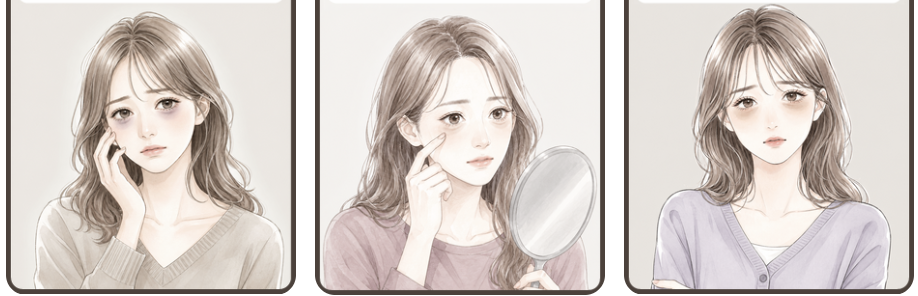
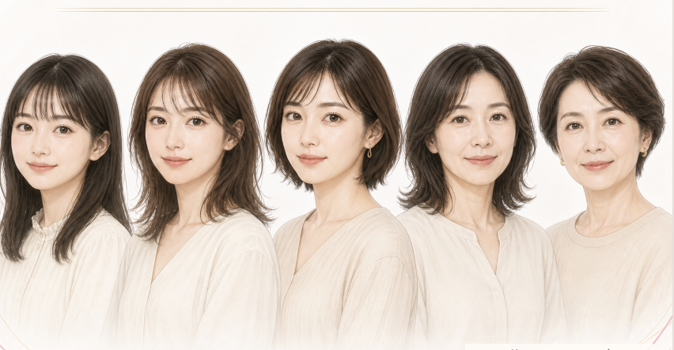
全画面共通の確定指示
- 確定指示Q1、Q2、Q3の4分岐、Q4、Q5、ローディング、診断結果4種類、CTA直前の医師との相談画像まで、同じ女性キャラクターと同じアニメ調の絵柄で統一する。
- 確定指示現在の画像が伝えている構図・人物の動作・目元のズーム・シチュエーションは、個別に削除指示がない限り残す。変更対象は主に絵柄であり、情報設計ではない。
- 確定指示画像内に質問文があるQ1〜Q5では、画像直下にコードで再表示している同じ質問文を削除する。質問を二重表示しない。
- 確定指示全質問の回答ボタンは縦並びのまま、角を丸くする。目的は、カクカクした印象を減らし、女性向けの記事に合う柔らかい雰囲気へ寄せること。
- 確定指示すべての質問画面から「戻る」を削除し、再表示しない。
- 確定指示回答をタップしたら自動で次へ進む現在の動作を維持する。「次へ」ボタンを追加しない。
- 確定指示25,000円、25,000円OFF、25,000円クーポンの表記は、CTA周辺と画像内を含めて完全に削除する。
02. 診断全体の構造と今回の改修範囲
年代
クマ4タイプ
タイプ別4分岐
試したケア
理想の姿
公開実装で確認した事実
診断結果は4種類
茶クマ、青クマ、黒クマ、複合クマ。Q2で選んだタイプが診断結果の種類を決めます。
Q2×Q3は16ルート
各タイプにQ3の選択肢が4つあり、結果下の個別説明を16通りに分けられる構造です。
Q1・Q4・Q5は文脈づくり
現行ロジックでは診断タイプの決定に使っていません。年代、過去の対策、理想像を読者自身に答えさせる役割です。
自動遷移
選択後約240msで次の質問へ進み、最終回答後は約1.6秒のローディングを挟みます。
制作者の仮説診断の心理遷移は「年齢で参加 → 悩みを選択 → 悩みを深掘り → 過去の対策を想起 → 解決後の理想を描く → 自分の傾向を受け取る → 医師なら詳しく確認できる → 無料カウンセリングへ進む」です。
03. Q1「あなたの年代は？」
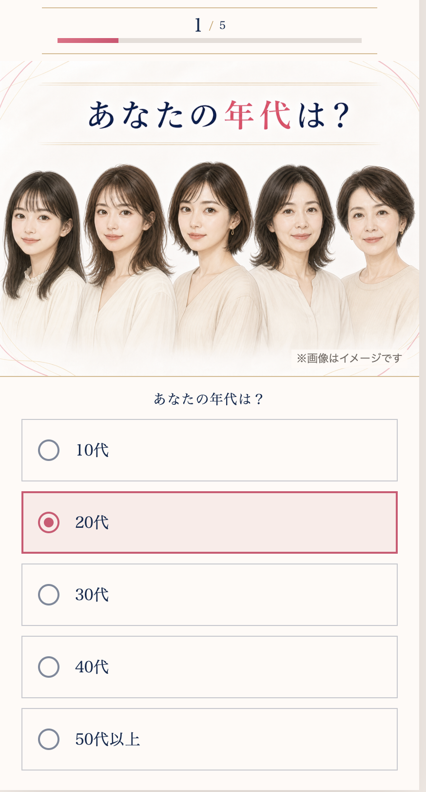
変更内容
- 削除画像下のコードで表示している質問文「あなたの年代は？」を削除する。
- 残す画像内の大きな「あなたの年代は？」を質問見出しとして使う。
- 残す10代、20代、30代、40代、50代以上の5択と縦並びを維持する。
- 変更5つの回答ボタンの角を丸くする。ラジオ選択とタップ後の自動遷移は維持する。
- 変更5年代の女性は、年齢差を認識できる構図を保ち、絵柄だけを共通のアニメ調へ変える。
04. Q2「鏡で見て、いちばん近いクマは？」
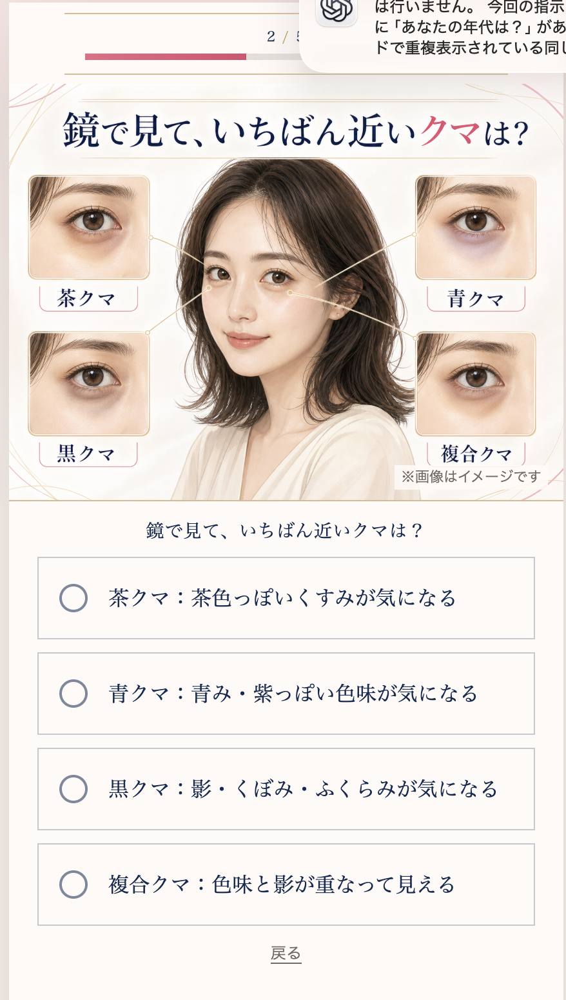
変更内容
- 削除画像下のコード質問「鏡で見て、いちばん近いクマは？」を削除する。
- 残す画像内の質問文、中央人物、四隅の目元アップ、4タイプの名称、目元と人物を結ぶ線を維持する。
- 変更人物と4つの目元症状を同じアニメ調へ描き直す。茶・青・黒・複合の差は一目で判別できる濃度と色で表現する。
- 変更4つの回答ボタンの角を丸くする。
- 全画面削除画面最下部の「戻る」を削除する。Q2だけでなくQ1〜Q5の全質問へ適用する。
05. Q3：Q2の回答に合わせた4分岐
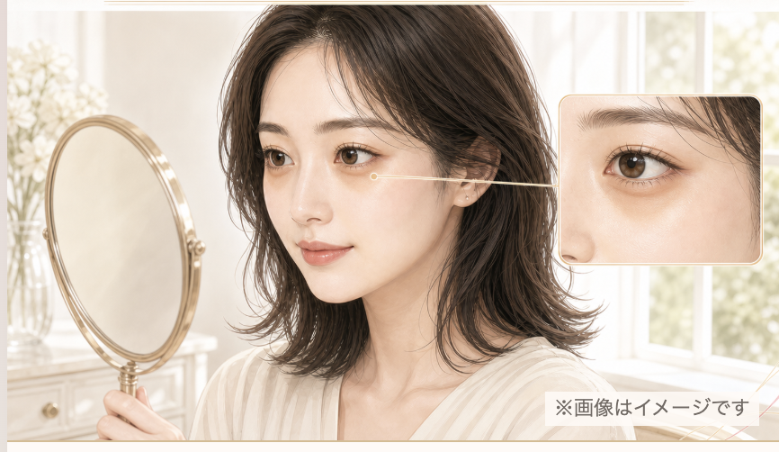
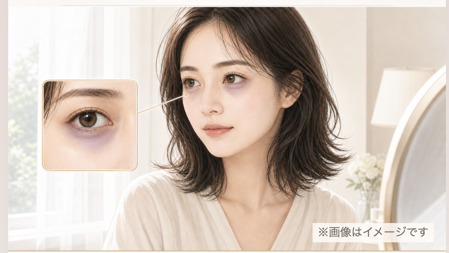
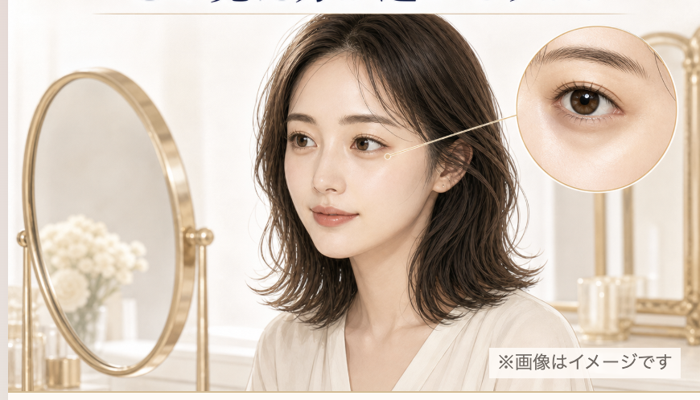
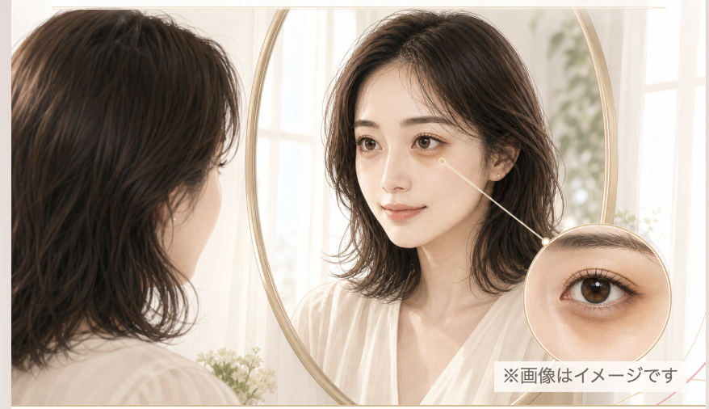
4分岐すべてへ適用する共通変更
- 削除画像下にコードで表示している各質問文を削除する。
- 変更回答ボタンの角を丸くする。
- 削除「戻る」を表示しない。
- 残す人物、症状の目元アップ、接続線、症状に合わせた表情・向き・鏡の位置を維持する。
- 変更人物と目元アップの絵柄だけを共通のアニメ調へ変更し、Q1・Q2と同一人物に見える顔、髪、服、配色へ統一する。
| Q2タイプ | Q3の質問 | 4つの詳細選択肢 |
|---|---|---|
| 茶クマ | 茶色っぽい印象について、どの見え方が近いですか？ | 近くで見たときの色味／メイク後にも残る色味／下まぶたを軽く引いても色味が薄くなりにくい／ほかの見え方も重なっている |
| 青クマ | 青み・紫っぽい印象について、どの見え方が近いですか？ | 疲れて見えると感じる場面／下まぶたを軽く引くと色味が薄く見える／顔全体との色味の差／ほかの見え方も重なっている |
| 黒クマ | 影・くぼみ・ふくらみについて、どの見え方が近いですか？ | 上を向くと影が薄く見える／角度や明るさで見え方が変わる／ふくらみやくぼみが気になる／ほかの見え方も重なっている |
| 複合クマ | 色味と影が重なる印象について、どの見え方が近いですか？ | 色味と影の両方が気になる／角度や明るさで色と影の見え方が変わる／目の下のふくらみと、くすみが重なって見える／日によって複数の見え方が重なる |
06. Q4「これまで試した目元ケアはありますか？」
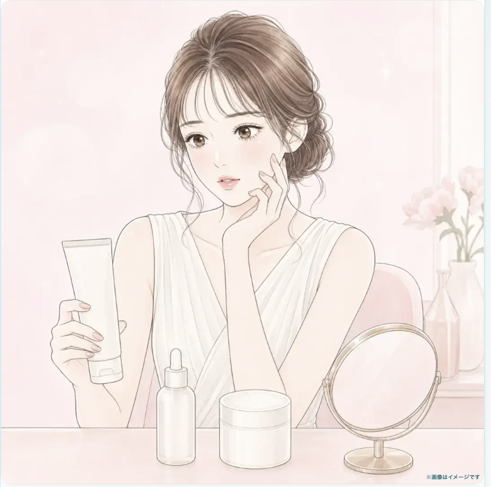
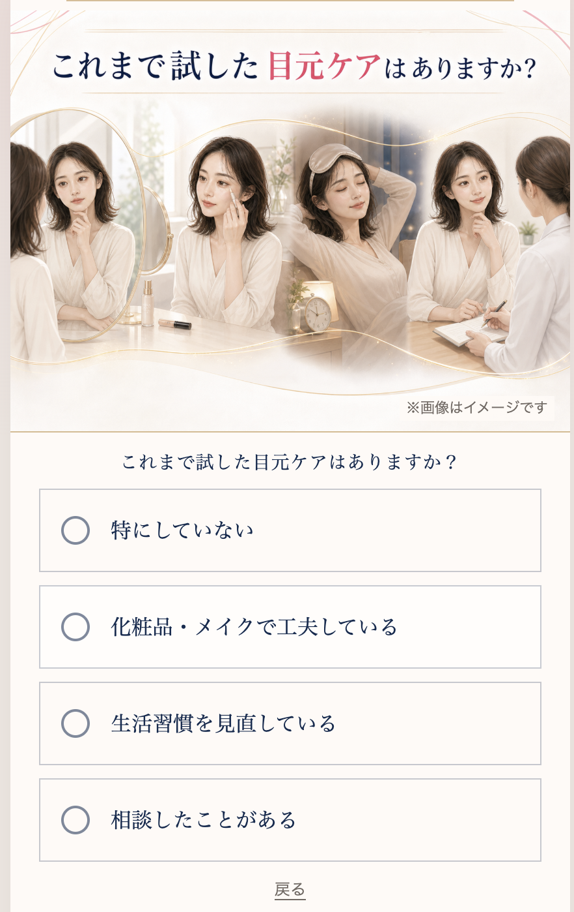
最終確定内容
- 確定指示現行の複数シチュエーション構図をそのまま残す。左端の鏡を視認する場面、化粧品を使う場面、睡眠・生活習慣の場面、相談する場面を削除しない。
- 変更人物を共通のアニメ調・同一キャラクターへ変更する。
- 削除画像下のコード質問を削除する。
- 変更回答ボタンの角を丸くする。
- 削除「戻る」を表示しない。
07. Q5「クマが気にならなくなったら？」
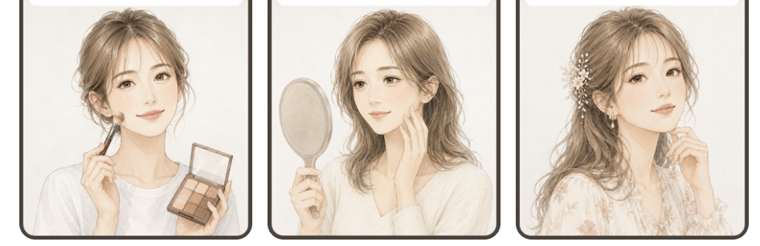
変更内容
- 残す「朝のメイクを楽にしたい」「若々しい印象を取り戻したい」「自分の顔に自信を持ちたい」「お出かけを楽しみたい」の4つの理想像と、それに対応する4シーンを維持する。
- 変更4シーンすべてを共通のアニメ調、同一人物で描き直す。
- 削除画像下のコード質問を削除する。
- 変更回答ボタンの角を丸くする。
- 削除「戻る」を表示しない。
08. 最終回答後のローディング
- LP上の事実公開実装は最終回答後に約1.6秒のローディングを表示し、「5つの回答から、あなたに近いクマ傾向を整理しています」「まもなく結果を表示します」と伝えています。
- 変更ローディング中の人物画像も、Q1〜Q5と同じ女性キャラクター、同じアニメ調へ変更する。
- 残す回答を整理している時間をつくり、診断結果への期待を高める役割と進捗演出は維持する。
09. 診断結果：見出し階層と個別説明を作り直す
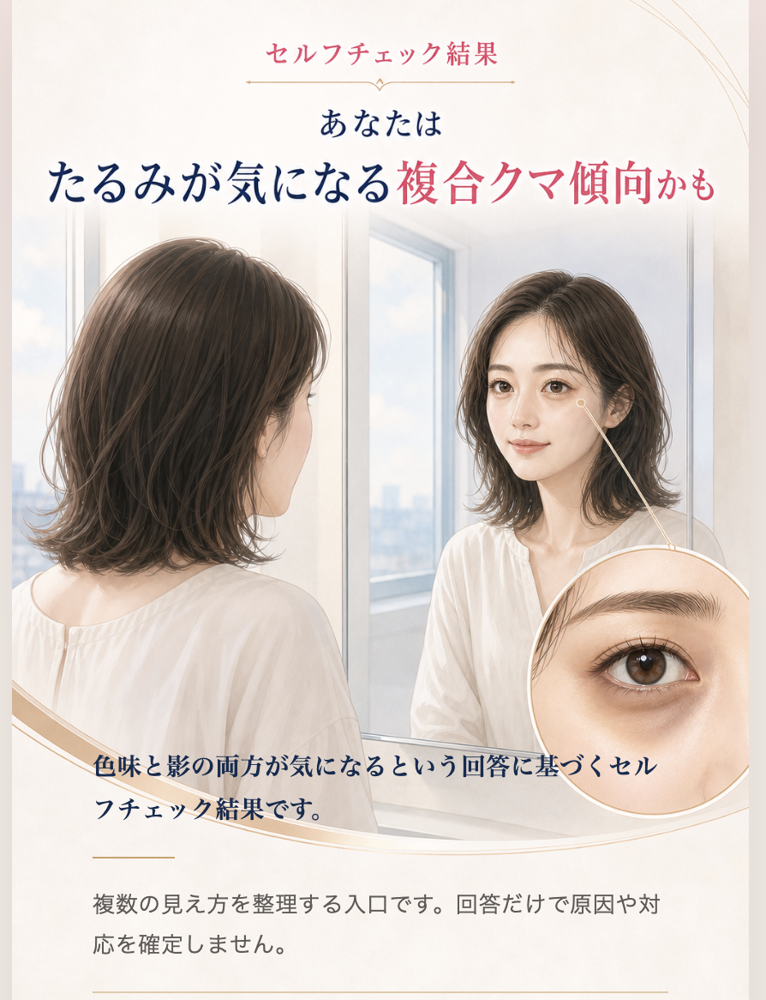
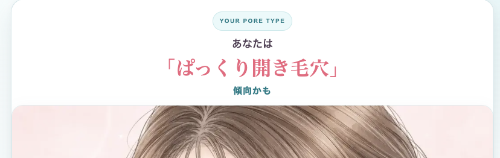
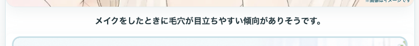
結果見出しは2行で固定
- 確定指示1行目は「あなたは」＋原因・状態を示す言葉。2行目はクマタイプ＋小さな「傾向かも」。
- 強調順最も強くするのは「茶クマ／青クマ／黒クマ／複合クマ」。赤文字で最大表示する。次に「くすみがたまった／めぐりが悪化した／コラーゲン不足の／たるみが気になる」を目立たせる。「傾向かも」は極小表示にする。
- 変更結果画像の人物と目元アップも、同じアニメ調・同一キャラクターへ変更する。
| 結果タイプ | 1行目の原因・状態 | 2行目の最強調 | 添える小文字 |
|---|---|---|---|
| 茶クマ | あなたは くすみがたまった | 茶クマ | 傾向かも |
| 青クマ | あなたは めぐりが悪化した | 青クマ | 傾向かも |
| 黒クマ | あなたは コラーゲン不足の | 黒クマ | 傾向かも |
| 複合クマ | あなたは たるみが気になる | 複合クマ | 傾向かも |
要確認事項公開中の診断ロジックには、上記4見出しの根拠強度が「claims review pending」と記録されています。文言は今回の確定指示どおり制作し、公開前の医療広告・表現確認は別工程で実施してください。この資料の判断で表現を別コピーへ変更しません。
画像に重なるシステム説明を削除
全4結果で削除色味と影の両方が気になるという回答に基づくセルフチェック結果です。および茶・青・黒で同じ役割を持つ文を削除する。画像との重なりと、システムが回答処理を説明する印象をなくす。
代わりに、Q2＋Q3を反映した短い一文を置く
確定指示結果画像の下には、Q2のクマタイプとQ3の詳細回答を読者向けに言い直した短い一文を置く。4タイプ共通文へ統合せず、16ルートすべてに個別文を用意する。
Q2「茶クマ：茶色っぽいくすみが気になる」＋Q3「近くで見たときの色味」
→「近くで見たときに、茶色っぽいくすみが目立ちやすい傾向がありそうです。」
残り15文は、上のQ3分岐表にある回答内容をそのまま材料にし、「いつ／どの条件で」「何が目立つか」を一文で示します。「回答に基づくセルフチェック結果です」の型へ戻さないでください。原因や治療を断定する文章も追加しません。
10. CTA直前：コード主体の説明を、医師との相談が伝わる完成画像へ
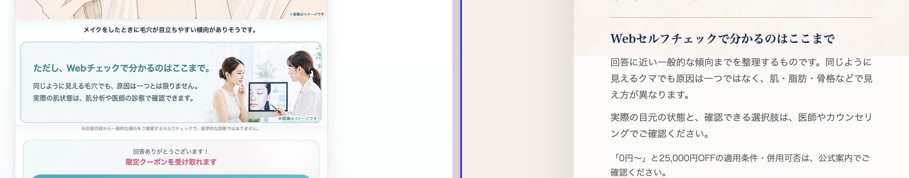
絶対条件
- 確定指示このブロックはHTMLテキストだけで組まず、見出し、短い説明、医師との相談場面を一体化した完成画像として制作する。
- 確定指示Q1〜結果画面と同じ女性キャラクターを使い、医師またはカウンセラーが目元の状態を確認している場面を明確に描く。
- 確定見出し画像内の主見出しは「詳しくは医師による診断で確認」。
- 伝える3点同じように見えるクマでも原因は人それぞれ／詳しい状態は医師による診断で確認する／無料カウンセリングで目元の状態を確認できる。
- 削除「0円〜」と25,000円OFFの適用条件・併用可否は公式案内で確認する、という現行文章を削除する。
画像内の基準文
補足：同じように見えるクマでも、原因は人それぞれ。まずは無料カウンセリングで、目元の状態を確認しましょう。
画像内へ収める際に補足文を短くすることは認めます。ただし「人によって原因が違う」「医師が詳しく確認する」「無料カウンセリングで目元の状態を確認する」の3つは削除しません。長い文字を縮小して詰め込まず、可読サイズを優先します。日本語を画像生成に任せきりにせず、人物・背景を生成した後に正確な日本語を画像へ組み込み、最終的に一枚の画像として書き出します。
11. CTA：25,000円を消し、無料カウンセリングと目元確認を最強調
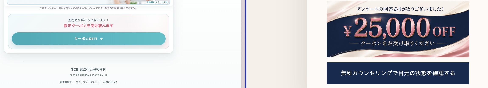
CTA上部のテキスト
HTMLテキストで可ここだけはコードで簡潔に表示してよい。
限定クーポンをお受け取りください
CTAボタンの確定文言
見た目と動き
- 確定指示CTA本体は、参考画像のように人物・強い色面・大きな文字・押せる形を一体化した画像型CTAとして制作する。現行の平坦な長方形リンクのままにしない。
- 最強調ボタン内では「無料カウンセリング」と「目元の状態」を最も目立たせる。
- 動きCTA全体を、拡大して元へ戻るズームイン／ズームアップのパルスアニメーションで繰り返し動かす。読めない速度、過度な振動、位置ずれは使わない。
- クリック領域画像全体をリンク化し、スマートフォンで十分なタップ領域を確保する。
- 完全削除25,000円、¥25,000 OFF、25,000円クーポンプレゼントを、上部文言・CTA画像・alt・注釈から削除する。
- 残す「限定クーポン」という表現はCTA上部の補助情報として残す。ただし、CTAより目立たせない。
12. 途中で検討したが、最終指示では採用しない内容
実装担当が古い発話だけを拾って誤実装しないよう、撤回内容を明記します。
| 途中案 | 最終判断 |
|---|---|
| Q1の選択肢を横並びにする | 採用しない。縦並びのまま、角だけを丸くする。 |
| Q4を参考元のケア用品中心の一枚絵へ変える | 採用しない。現行の複数シーンを残し、絵柄だけを変える。 |
| CTAで25,000円クーポンを訴求する | 採用しない。25,000円表記は完全削除。「限定クーポン」だけを補助情報として残す。 |
| CTA直前の見出しを別案で作る | 確定済み。「詳しくは医師による診断で確認」を使う。 |
| CTAボタンの文言を別案で作る | 確定済み。「無料カウンセリングで目元の状態を確認する」を使う。 |
13. 2026-09-03の公開実装との照合結果
| 項目 | 公開実装の状態 | 今回の扱い |
|---|---|---|
| 全5問 | 確認済み | 維持 |
| Q2→Q3の4分岐 | 確認済み | 維持 |
| 診断4種類・詳細16ルート | 確認済み | 見出し階層と16個の結果下文を改善 |
| 回答タップ後の自動遷移 | 確認済み | 維持 |
| 戻る | 公開HTML／JS上では未実装 | 削除状態を維持。再追加しない |
| 画像内とコードの質問重複 | 残っている | Q1〜Q5でコード側を削除 |
| 回答ボタンの角 | CSSで0px | 全質問で角丸へ変更 |
| 人物の絵柄 | リアル寄り画像が残っている | 同一キャラクターのアニメ調へ全置換 |
| CTA直前 | コード主体の説明 | 医師との相談場面を含む完成画像へ変更 |
| 25,000円表記 | 注釈と画像altを含めて残っている | 完全削除 |
| CTA文言 | 「無料カウンセリングで目元の状態を確認する」 | 文言を維持し、画像型CTAと強調・パルスを追加 |
14. 実装完了のチェックリスト
以下がすべて「はい」になるまで、完成扱いにしません。
- 全人物が同じアニメ調に統一されている
- 同じ女性キャラクターが全画面で維持されている
- Q1の年代差をイラストで判別できる
- Q2の4タイプを目元アップで判別できる
- Q3の4分岐すべてを制作した
- Q3の人物＋拡大＋接続線を維持した
- Q4の現行4シーンを維持した
- Q5の現行4シーンを維持した
- ローディング画像も同じ絵柄にした
- 結果4種類も同じ絵柄にした
- Q1〜Q5の重複質問を削除した
- 全回答ボタンを角丸にした
- 回答ボタンは縦並びのままである
- 回答タップで自動遷移する
- 「次へ」ボタンを追加していない
- 「戻る」が全画面に存在しない
- 結果見出しを2行構成にした
- クマタイプを赤・最大で表示した
- 原因・状態の文言を次点で強調した
- 「傾向かも」を極小表示にした
- システム説明文を全4結果から削除した
- Q2×Q3の個別一文を16通り用意した
- 個別一文で原因・治療を断定していない
- CTA直前を完成画像として制作した
- 画像内に医師との相談場面がある
- CTA直前の見出しが確定文言と一致する
- CTA直前の3つの意味を保持した
- CTA上部の2行が確定文言と一致する
- CTA本体が画像型で最も目立つ
- CTA文言が確定文言と一致する
- 無料カウンセリングを強調した
- 目元の状態を強調した
- CTAに穏やかな反復パルスがある
- CTA画像全体をタップできる
- 25,000円表記が本文・画像・altにない
- PCとスマートフォンで文字が読める
- 画像の縦横比が崩れていない
- 4タイプ×4詳細の分岐が壊れていない
- 全16ルートから結果まで到達できる
- 公開前に医療表現の確認を実施した